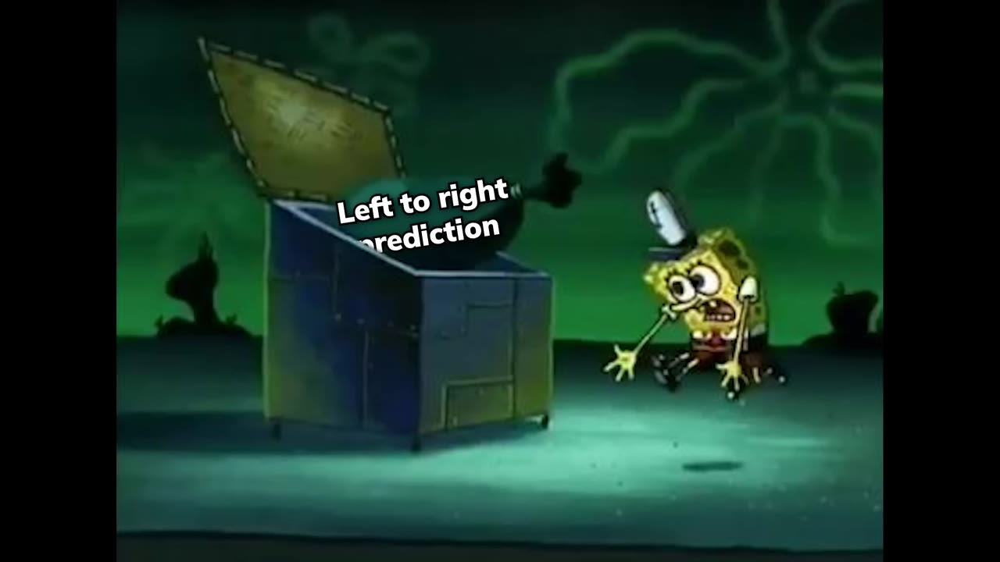
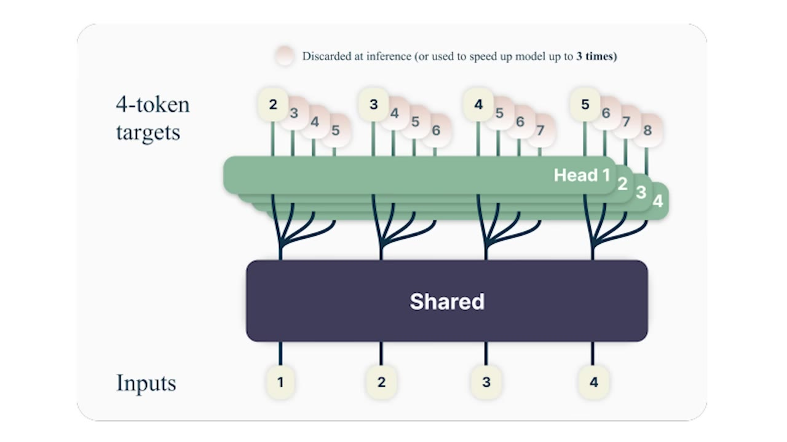
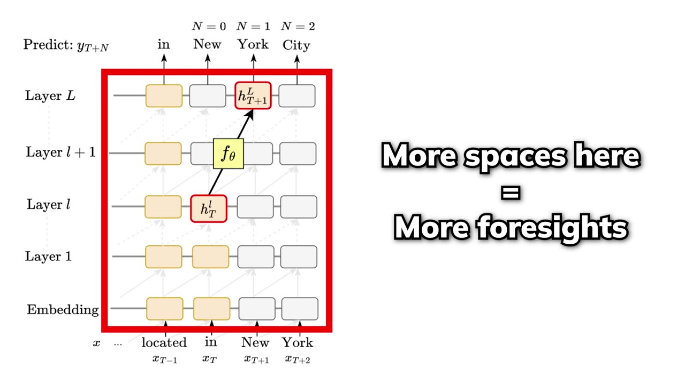
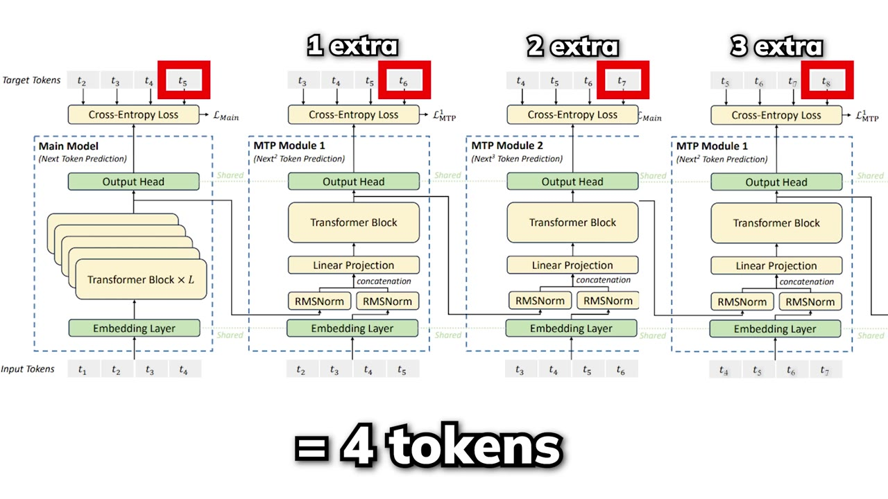
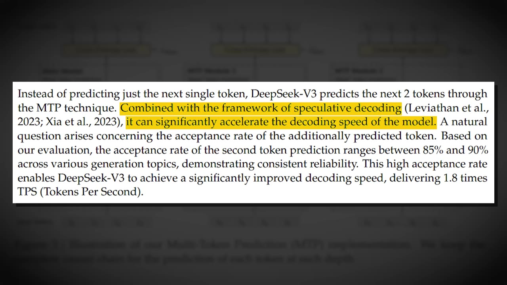

LLMs are fundamentally blind to their own future output. A technique called multi-token prediction gives them foresight — and surprisingly, the bigger the model, the more it helps.
Watch on YouTubeAsk any non-reasoning model how many words are in a sentence it's about to generate, and it will most likely get it wrong. Not because it can't count tokens — because predicting left to right makes it impossible to know its own future output.

The biggest flaw in the current next-token prediction paradigm is that every token can only see the ones before it. Nothing new about this — it's how transformers have always worked.
Some researchers have tried diffusion language models as an alternative: a fixed window where all tokens fill simultaneously, each having a say about the others. But the engineering bar for next-token prediction is so high it's hard for anything to catch up.
And bidirectional "bird" models that attend both ways theoretically create more accurate predictions but can't scale the way transformers can.
What if instead of predicting the next token t+1, you predicted t+2, t+3, even t+4 — all at once?

The architecture is straightforward: a standard transformer ("the trunk") processes the input and produces one hidden state at position t. Instead of a single output head, you attach multiple independent heads — each predicting the next few positions in parallel.
One pass through the model = four tokens predicted simultaneously. On paper, 4x speedup.
But here's the catch: when you have four independent heads making weather forecasts for four different days without communicating, things get inconsistent fast. The researchers themselves found that predicting four tokens at once degrades performance badly.
It's like having four different people doing weather reporting independently for four different days without letting them communicate with each other.bycloud
Despite the inconsistency problem, training with parallel heads actually improves structural and syntactic capabilities — especially for coding. And the effect scales: larger models get bigger boosts.

The research found that analyzing just a single hidden state at position t, they could approximate the model's prediction for the next two tokens with up to 48% accuracy. Even a model trained only for next-token prediction has already built some foresight into its hidden states.
Larger models have more internal space to build these kinds of foresight — which is why MTP gives them a 1.7% to 4.5% boost over baseline across coding benchmarks. It's not a fluke; the foresight was already there, MTP just makes it explicit.
When the model is trained to predict multiple tokens at once, their structural and syntactic capabilities are increased by a lot.bycloud
So why hasn't everyone adopted parallel MTP? Because the inconsistency is real. DeepSeek V3's solution: make MTP sequential instead of parallel.

After the transformer trunk produces hidden state H₀, instead of spawning independent heads, DeepSeek V3 adds sequential MTP modules:
The key insight: MTP as a training signal, not an inference method. The gradients from the MTP modules flow back through the shared trunk, forcing the model to develop richer representations with longer-range foresight — all during training, with almost no compute overhead.
This completely changed the use of MTP — from a prediction method into a powerful training tool.bycloud
The ablation studies validated this rigorously across two model sizes (15.7B and 228.7B parameters):

Models trained with MTP auxiliary objectives consistently performed better across almost every benchmark. And they kept one MTP module during inference for speculative decoding — the model predicts two tokens at once:
DeepSeek V3 already uses MTP — it just got overshadowed by other flashy features. The technique itself is quietly one of the smarter innovations in the model.
Very creative, right?bycloud